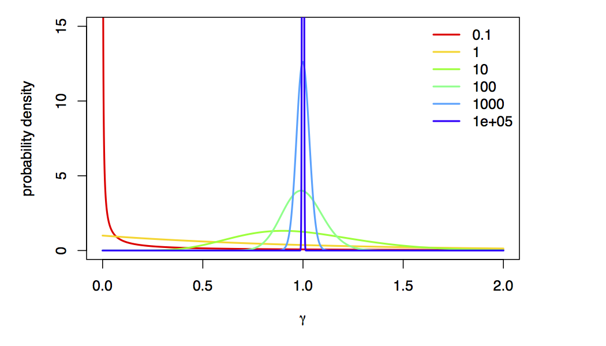

You should read first the General Introduction to Model selection tutorial, which explains the theory and standard algorithms for estimating marginal likelihoods and Bayes factors. Additionally, you may want to work through the Model selection of common substitution models for one locus tutorial, which estimates marginal likelihoods for different substitution models for one locus, before attempting this tutorial.
Sometimes, the data are indecisive about which model is preferred by Bayes factor. We call this phenomenon model uncertainty because we’re actually uncertain about which model is the best description of the process that generated our data. The natural Bayesian solution to this problem is simply to treat the model itself as a random variable, which averages parameter estimates (including the tree, branch lengths, and all substitution model parameters) over the uncertainty in the model itself. We accomplish this (generally) using a special “reversible-jump” MCMC algorithm (also known “rjMCMC”, “transdimensional MCMC”, or “the Green algorithm”) which adds, removes, or combines parameters to move between models.
The state space of potential models is vast, so we’ll restrict ourselves to a very particular set of models, in particular, we’re going to average over the “named” members of the GTR models (the ones you learned specifically in class) and models with and without Gamma-distributed ASRV.
We average over $Q$-matrices by including all of the relevant parameters ($\kappa$, $\pi$, $r$) in our model, and using a model indicator to indicate which parameters to include in the model. For example:
kappa ~ dnExp(1)
moves.append( mvScale(kappa, weight=5.0) )
pi ~ dnDirichlet(v(1,1,1,1))
moves.append( mvBetaSimplex(pi, weight=5.0) )
er ~ dnDirichlet(v(1,1,1,1,1,1))
moves.append( mvBetaSimplex(er, weight=5.0) )
Q_JC <- fnJC(4)
Q_K80 := fnK80(kappa)
Q_F81 := fnF81(pi)
Q_HKY := fnHKY(kappa, pi)
Q_GTR := fnGTR(er, pi)
Q_vec := v(Q_JC, Q_K80, Q_F81, Q_HKY, Q_GTR)
model_indicator ~ dnCategorical(simplex(1,1,1,1,1))
moves.append( mvRandomGeometricWalk(model_indicator, weight=10.0, tune=FALSE)
Q := Q_vec[model_indicator]
In this case, we have a vector of $Q$ matrices that are assembled from the relevant parameters, and another parameter (the indicator) that allows us to move between $Q$ matrices!
Including reversible-jump for Gamma-distributed ASRV is more straightforward:
alpha ~ dnReversibleJumpMixture(1E8, dnUniform(0,1E8), 0.5)
alpha.setValue(1.0)
moves.append( mvRJSwitch(alpha, weight=10.0) )
moves.append( mvScale(alpha, weight=10.0) )
alpha_indicator := ifelse(alpha == 1E8, 0, 1)
site_rates := fnDiscretizeGamma(alpha, alpha, 4)
Here, we draw alpha from a “reversibe jump mixture”, which specifies the value of alpha
when ASRV is “turned off” (the first argument), the prior distribution from which alpha is drawn
when the ASRV is “turned on” (the second argument), and the prior probability that ASRV is “turned on” (the final argument).
The alpha_indicator parameter will have a value of 1 when ASRV is “turned on”
and a value of 0 when it is “turned off”.
We’re using a value of alpha=1e8 to approximate “no rate variation”,
because, as $\alpha \rightarrow \infty$, the Gamma-model collapse to a spike at 1 (i.e., approximately no rate variation):

Using reversible jump, we can actually estimate the posterior probability of each model! In this case, the posterior probability of a model for a particular locus is the frequency with which it is sampled in the posterior distribution; in this case, the posterior probability of the rate-variable model is the fraction of MCMC samples that aren’t 10000, which is also the posterior mean value of the alpha_indicator parameter!
model_average_primates_cytb.Rev script.
Examine the posterior distributions of the model_indicator and alpha_indicator parameters in Tracer.
What is the posterior probability that our model includes Gamma-distributed rate variation?
What is the $Q$ matrix with the highest posterior probability? What substitution models are in the 95% credible set?matK and rbcL by making the appropriate changes to the model_average_primates_cytb.Rev script.
Are these results consistent with the Bayes factors we computed in the first section of the tutorial?